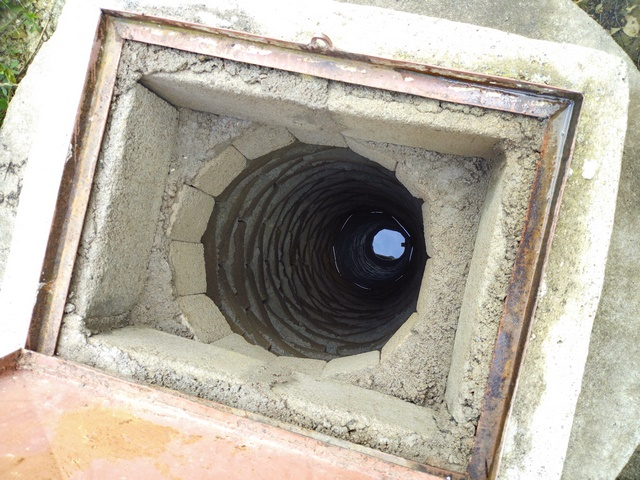
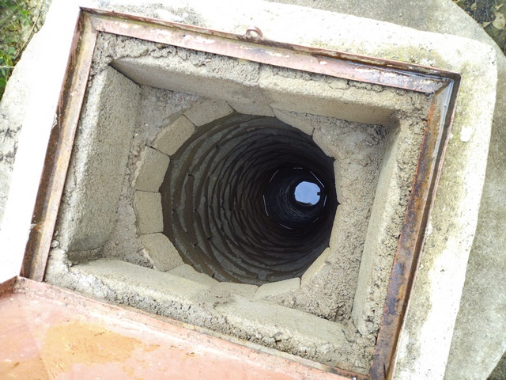
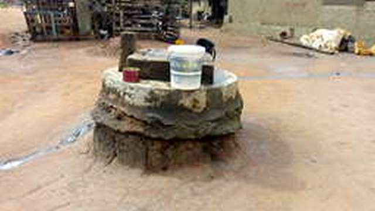
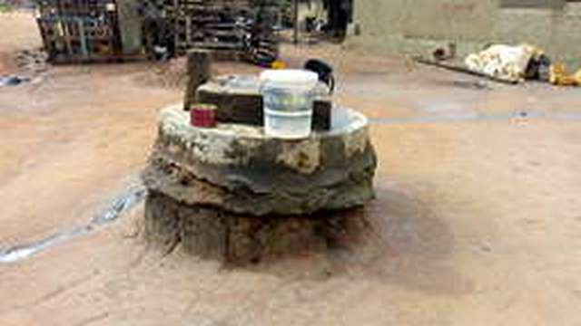

Zone Industrielle – Djézoukouamékro
Quartier à l'ouest de Bouaké
| Informations générales | |
|---|---|
| Nom de la localité : | Zone Industrielle - Djézoukouamékro |
| Population (2014) : | 48787 habitants |
| Aire : | 5 km² |
| Dessertes en eau potable | Totalement raccordé au réseau SODECI |
| Gestion des excrétas | Assainissement autonome |
Socio-Anthropologie
Appelé à l’origine Djézoukouamékro, Zone Industrielle est un ancien village baoulé, chef-lieu d’un royaume Akan. Situé à l’origine à l’emplacement actuel du Centre Hospitalier Universitaire de Bouaké. Le Chef actuel se nomme Nanan DJEZOU 2. Comme il le précise, « Djézoukouamekro est le cœur de la zone Industrielle. Tous les quartiers que vous voyez, tous les petits villages derrières la Zone Extension (un sous-quartier), c’est moi qui suis le chef central. Tous les chefs tiennent leurs réunions chez moi ici ». L’urbanisation et l’industrialisation du quartier a attiré de nouveaux habitants. Les autochtones baoulé sont plus concentrés dans les villages de Djezoukouamékro, Kouakro Assoumankro, Sarakakro et parfois à la Zone Extension considérés comme des sous-quartiers. Les secteurs Zone Terminus, Zone Extension et présentent une communauté diversifiée composée d’Akan (majoritairement baoulé), de Mandé (nord, sud), de Gur et de Krou. Le secteur de Djézou Rail et Zone extension présente une forte communauté originaire d’autres pays de la CEDEAO principalement maliennes, burkinabé et guinéennes, même s’ils sont dans les autres sous-quartiers. Les moquées sont plus visible dans les secteurs à forte concentration de communautés CEDEAO tandis qu’on retrouve des églises Catholiques, CMA, Assemblées de Dieu réveil et autres dans les zones diversifiées. C’est le lieu de préciser que les autochtones fréquentent généralement l’église catholiques et CMA. Les édifices religieux les plus imposants sont l’église catholique et la mosquée principale de Zone Terminus. Il faut noter également que de nombreuses personnes restent animistes dans presque tous les sous-quartiers cités. Les activités économiques restent variées. La plupart des femmes, s’adonnent aux petits commerces (d’attiéké, de légumes aux abords des rues, vente de jus à domicile et au marché du quartier) et métiers (coiffure, couture). Les hommes sont fonctionnaires (privés, public), commerçants au centre-ville. La jeunesse estudiantines et celle qui luttent contre le chômage crée et gère dans cabines téléphoniques. Le coût réduit des loyers dans le quartier explique une forte concentration des étudiants et des hommes qui font les emplois moins rémunérés. Toutefois, ils convient de noter de nombreux fonctionnaires motorisés y vivent. L’un des leaders de jeunesse et fonctionnaire explique la présence de fonctionnaires dans le quartier à travers son témoignage : « La vie est moins chère dans le quartier. Je vie dans une maison de quatre pièces avec ma famille. Elle me coûte 25 000 F CFA. Je travaille au quartier Air France où le prix de cette maison est six fois plus élevé. Je me rends chaque jour à moto ; ce qui ne me coûte pratiquement rien. J’arrive donc à économiser pour espérer acheter un terrain d’ici quelques mois pour construire ma propre maison. Si vous voyez les fonctionnaires habiter à la Zone, c’est parce qu’ils ont des projets d’avenir ». Ces éléments permettent de décrire de façon sommaire le quartier Zone Industrielle.
Configuration spatiale
Le quartier de Zone Industrielle est un quartier majoritairement loti de standing bas, mais englobe des poches plus récentes de zones non loties. Il est délimité au sud par la voie ferrée, à l'est par un quartier spontané qui est Soussonoubougou, au nord par des quartiers lotis de moyen standing (Gonfreville et Beaufort) et à l’ouest par un village intégré à la ville qui est Sarakakro. Le quartier dispose des infrastructures de base : centres de santé et écoles. Il est desservi par une voie principale bitumée, mais la voirie secondaire n'est pas bitumée et n'a pas de réseau de drainage. En conséquence, certaines zones souffrent d’importants problèmes d'érosion.
Le tissu urbain est hétérogène. Les parcelles de la zone lotie forment un plan en damier et sont raccordées aux réseaux d'eau potable et d'électricité.
Dans les zones non loti le plan est moins régulier, mais les habitations sont raccordées aux réseaux.
Paysage urbain


Diagnostic des points d'eau analysés
Les enquêtes sanitaires ont porté sur un ensemble de 31 points d’eau : 26 puits familiaux dont deux construit par des ONG musulmanes, trois puits communautaires situés dans des mosquées et deux points d’eau de surface (un marigot et un bras du barrage de Gonfréville).
Forages
Aucun forage diagnostiqué dans le quartier
Puits
Les 29 puits analysés dans ce quartier sont majoritairement de type traditionnel : 24 puits n’ont pas de parois cuvelées, les cinq autres sont maçonnés. Seul 16 puits ne tarissent pas pendant la saison sèche.
L’aménagement de surface est constitué généralement d’une margelle couverte d’une dalle avec une trappe pour faciliter la collecte de l’eau. La plupart du temps, les superstructures ne sont pas en bon état. 18 puits visités présentent des fissures sur la dalle de couverture ou la margelle. Certains puits risquent des éboulements à cause de l’érosion. Si certains puits sont dotés de poulies ou de treuils, ceux-ci ne sont pas utilisés pour l’exhaure de l’eau, ce qui augmente considérablement les risques de contamination.
 

L’inspection sanitaire des puits à usage domestique de la Zone industrielle révèlent que la grande majorité dans points d’eau est vulnérable aux risques de pollution.
| Niveau de vulnérabilité | Très élevé | Élevé | Moyen | Faible |
|---|---|---|---|---|
| Effectif des puits | 11 | 14 | 4 | 0 |
Les risques potentiels observés sont dus à :
- Un défaut d’étanchéité sur les trois mètres en dessous de l’ouvrage et de la superstructure à cause de fissures et craquelures sur 28 puits,
- Mauvais conditionnement du système d’exhaure sur 21 puits
- Les latrines ou toilettes sont construites à proximité de points d’eau : 19 puits concernés
- L’absence ou l’inadaptation du couvercle de 19 puits
- Un manque d’hygiène autour de 17 puits


 

L’analyse de la qualité des eaux vient confirmer la vulnérabilité sanitaire des ouvrages. En effet, 20 puits sont contaminés par la bactérie E coli. La présente de E coli dans les eaux indique une contamination fécale d’origine humaine ou animale à moins de 30 mètres. Cette contamination s’explique par un défaut d’étanchéité des fosses des latrines, une mauvaise gestion des ordures ménagères et la présence d’enclos à bétail. Les puits ne sont quasiment pas traités au chlore, ce qui explique la présence de bactéries. L’analyse des paramètres chimiques révèle que les ouvrages sont sujets à une pollution azotée : l’ammoniac et le nitrate. Cinq puits ont des concentrations en ammoniac supérieures à la norme admissible (1,5 mg/l) recommandée pour les eaux de boisson par l’OMS. Seul un des puits a une concentration en nitrate supérieure à 50 mg/L mais les concentrations restent élevées dans de nombreux ouvrages (supérieures à 44 mg/L). Les eaux de puits dans le quartier de Zone industrielle ont un pH acide (4,91 à 5,33). Leur goût, leur couleur et leur odeur est globalement jugée acceptable par les consommateurs.
Eaux de surface
Deux sources d’eau de surface sont utilisées par les populations de zone industrielle en cas de pénurie. Il s’agit de marigots situés dans un bas-fond entre la zone industrielle et le quartier municipal, et un bras du barrage de la Gonfréville situé dans le village d’Assoakro. Les marigots sont également exploités par des maraîchers. Ces eaux sont très fortement contaminées par E. coli. Il importe de souligner qu’aucune trace d’arsenic n’a été détectée au niveau de ses deux points d’eau.
Pratiques et modes d’approvisionnement en eau
La population du quartier s'approvisionne au réseau de la SODECI, dans des puits communautaires (puits de mosquées ou d'églises) et dans des puits privés situés dans la cour de l'habitation ou à l'extérieur de la parcelle. Les coupures récurrentes dans l'approvisionnement de la SODECI les incitent à privilégier les puits. Les plans d'eau de surface (mare et réservoir de barrage) sont utilisés principalement en période de crise (coupure longue du réseau et tarissement des puits). Lors de la crise de 2018, le quartier a été approvisionné en eau par des camions citernes de l'Office National de l'Eau Potable (ONEP).
Certaines personnes signalent qu'elles n'utilisent l'eau des puits que pour les tâches ménagères et privilégient l'eau de la SODECI pour la boisson.
Mode de gestion
L’eau courante est gérée par la SODECI. C’est une structure privée qui a un contrat d’affermage avec l’État et s’occupe de l’hydraulique urbaine. Celui ou celle qui veut avoir de l’eau courante se réfère à la Direction régionale qui se charge de lui vendre le compteur et envoie un agent faire l’installation. Les points d'eau communautaires (mosquées et églises) sont gérés par un comité local. Ces comités sont créés et composés de membres de la congrégation. Ils sont chargés de la collecte des fonds. Par exemple, à la mosquée de la Zone Extension, « le comité paye veille sur l’eau de SODECI et les deux puits. En cas de panne, on informe les fidèles et volontairement chacun participe selon ses moyens à la maintenance et la réparation. Le comité a une caisse où des donateurs extérieurs peuvent venir contribuer. Mais on ne demande rien à tous ceux qui viennent puiser l’eau » ; témoigne l’imam. Les puits privés relèvent de la responsabilité de leur propriétaire. Selon la présidente des femmes « Chacun s’occupe de son puits. Les voisins, même tout le quartier peuvent venir prendre de l’eau dans le puits. Mais c’est toi le propriétaire que l’entretien revient ». Le marigot n’est pas géré. Tous ceux qui le désirent peuvent s’approvisionner selon leur besoin.
Personnes ressources
- Le chef central des communautés Baoulé de Djézoukouamekro
- Présidente des femmes de la Zone Industrielle
- Président des jeunes de la Zone Industrielle
- Les imams de la mosquée centrale et de la mosquée de Zone extension
Gestion des excrétas
Le quartier de la Zone industrielle ne dispose pas d’un réseau de drainage des eaux usées. L’assainissement y est autonome, chaque habitation gère ses eaux usées domestiques. On retrouve tous des types d’ouvrages d’assainissement : fosses septiques, latrines sèches individuelles ou collectives. Les fosses, une fois pleine sont vidangées par des artisans ou des entreprises privées.
Desiderata des habitants
| Type d'entretien | Date |
|---|---|
| 10 entretiens individuel auprès de personnes ressources | 15-28 Octobre 2018 |
| 4 Focus group femmes | 15-28 Octobre 2018 |
| 2 Focus group hommes | 15-28 Octobre 2018 |
| 2 Focus group jeunes | 15-28 Octobre 2018 |
| 1 Focus group Chefferie | 15-28 Octobre 2018 |
Les entretiens montrent que la population utilise l'eau des puits en réaction à l'irrégularité des approvisionnements de la SODECI. Une distinction une différence des connaissances et des vœux des hommes et ceux des femmes apparaît dans les entretiens que nous avons menés.
Selon les femmes, les sources d’approvisionnement sont les puits, l’eau de SODECI et l’eau du marigot. « Chez nous ici, il y a des puits partout. Tu ne peux pas faire cinq cours sans trouver un puits. C’est dans ça que nous puisons le plus souvent ». Mme L, Djezoukouamekro S’agissant des autres sources, Marlène laisse entendre que « c’est vrai qu’il y a des robinets dans chaque maison, mais l’eau qu’on est toujours sûr d’avoir est celle des puits ; parce que même si ton puits est vide, tu peux aller puiser chez le voisin. ». Par ailleurs, « Les marigots servent à faire le jardin (les cultures maraîchers). Mais on lave les habits là-bas souvent aussi ; surtout quand on est en saison sèche. J’ai même vu des gens boire cette eau en mars 2018 lors de la crise d’eau ». Mme K.L Djezoukouamekro Au niveau de la qualité de l’eau, dans un premier temps, les femmes préfèrent l’eau de puits, ensuite l’eau de SODECI et enfin l’eau de marigot. Ainsi, elle manifeste le désir d’obtenir l’eau de SODECI (amélioré), ensuite les forages et PMH, ou encore les puits améliorés Selon les hommes, les sources d’eau accessibles sont les puits, la SODECI et le marigot. En termes de qualité, les hommes préfèrent l’eau de puits et SODECI. Aussi souhaiteraient-ils obtenir des forages, des puits améliorés, et l’eau de SODECI. On constate une légère différence entre les vœux des hommes et des femmes. Cela dépend de la réalité de chacun. A écouter les femmes « les puits nous fatiguent trop. Ils sont de plus en plus profonds et nous mettent dans des situations trop compliquées. Quand tu quittes là-bas, tu ne peux plus rien faire. Même pour faire la cuisine tu as des problèmes par ce que tu puises l’eau et après tu charges pour venir dans la maison ». Jeannette. Le choix dépend du niveau de sacrifice que chacun doit faire dans le processus d’accès à l’eau. Les femmes analysent les souffrances liées au processus d’approvisionnement tandis que les hommes se basent sur la rationalité économique. Pour ces derniers, « avec le puits, il n’y a pas facture d’eau à la fin du mois ». (Chef de communauté).
Tensions ressenties lors des entretiens
Tensions générales
Il n’y a pas de tensions notables entre les habitants du quartier Zone Industrielle. Les habitants des différents quartiers cohabitent sans conflits. Un leader communautaire autochtone exprime que « Pendant le carême de Ramadhan, les voisins musulmans viennent nous donner de la bouillie presque chaque jour. Le jour de la fête, nous mangeons tous ensembles. C’est pour vous dire qu’il n’y a pas de problème entre nous ici». Pendant les périodes de congés et de grandes vacances, les jeunes des différents sous quartiers organisent des compétitions de football. Ces éléments sont un exemple de la bonne cohabitation entre les riverains de la Zone Industrielle. Pour ce qui est des rapports avec les autres quartiers, on ne note aucun incident.
Tensions autour de l'eau
Les tensions majeures autour de la question de l’eau ont eu lieu pendant la pénurie d’eau de 2018. Les habitants évoquent des querelles dans la file d’attente des citernes de l’Office Nationale de l’Eau Potable (ONEP). Ces disputes portaient sur la ration d’eau distribuée et le non-respect de l’ordre de la file. Les femmes ont été particulièrement touchées par ces tensions, car ce sont elles qui sont chargées de l’approvisionnement en eau dans les ménages. Des tensions ponctuelles sont apparues autour de certains puits privés lorsque leurs propriétaires décidaient d’en restreindre l’accès. Ces tensions sont exclusivement liées aux épisodes de pénurie.
Relations avec les localités voisines
Lors de la pénurie de 2018, certaines résidentes du quartier partaient s’approvisionner en eau de boisson dans les quartiers sud de la ville. En effet, ceux-ci souffraient moins de la pénurie, car ils sont approvisionnés par le lac du barrage de camp. Ce réservoir a une capacité potentielle plus faible (3 millions de m3) que la Loka (25 millions de m3), mais il n’est pas comblé par les sédiments. L’eau était parfois payante, mais dans la majorité des cas, les habitants des quartiers sud fournissaient gratuitement de l’eau à leurs amis, collègues ou aux membres de leur famille résidant dans des quartiers plus exposés à la pénurie. La crise de l’eau a donc réactualisé les liens de solidarité existant et en a parfois suscité de nouveaux. Si l’eau était gratuite, le déplacement et le transport présentaient un coût non négligeable dans le budget familial. Certains fonctionnaires partaient avec des bidons vides le matin et revenaient avec de l’eau le soir pour approvisionner le ménage. « Chaque matin, je prends trois bidons de 25 litres que je remplie au bureau à Nimbo que je ramène le soir à ma descente » nous dit un leader de jeunesse. C’est à croire que ceux qui ont un moyen de transport avaient beaucoup plus de possibilité de ravitailler leurs ménages à partir des zones sud où il y avait de l’eau.